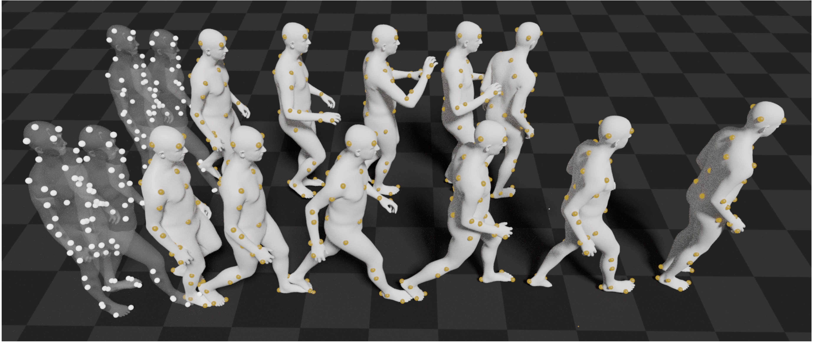

"We are more than our joints", or MOJO for short, is a solution to stochastic motion prediction of expressive 3D bodies. Given a short motion from the past, MOJO generates diverse plausible motions in the near future.

MOJO in a nutshell:
@inproceedings{zhang2021mojo,
title={We are More than Our Joints: Predicting how 3D Bodies Move},
author={Zhang, Yan and Black, Michael J and Tang, Siyu},
booktitle={Proceedings of the IEEE/CVF Conference on Computer Vision and Pattern Recognition},
pages={3372--3382},
year={2021}
}